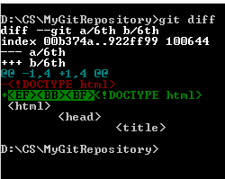

Command Line Interpreter
Командная строка
Запуск командной строки
Пуск --> Найти --> cmd

Команды командной строки
Ссылка на index.html
- dir - список файлов и папок
-
cd - перейти в другую папку. Требует задать агрумент (параметр) - в какую папку переходить.
Возмжные значения агрументов:
С использованием гита открываются новые команды:
- Git init
- Git status
- Git add
- Git commit
- Git push
- Git diff
- git init - делает папку доступной для работы из гита
- git status - показывает состояния файлов в рабочей директории и индексе
- git commit - берёт все данные, добавленные в индекс с помощью git add, и
сохраняет их слепок во внутренней базе данных(делает commit).
- git add - добавляет содержимое рабочей директории в индекс (staging area)
для последующего коммита
- git diff - используется для вычисления разницы между любыми двумя Git деревьями.
Это может быть разница между вашей рабочей директорией и индексом (собственно git diff),
разница между индексом и последним коммитом (git diff --staged), или между любыми двумя коммитами (git diff master branchB).
- git push - закидывает закоммиченную папку на сервер
Вот скриншот по команде git giff
